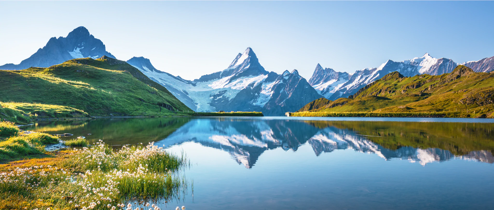
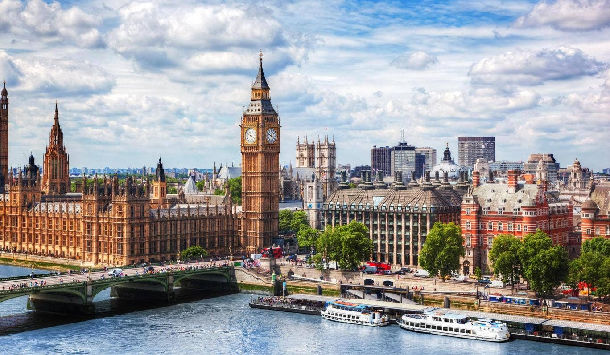
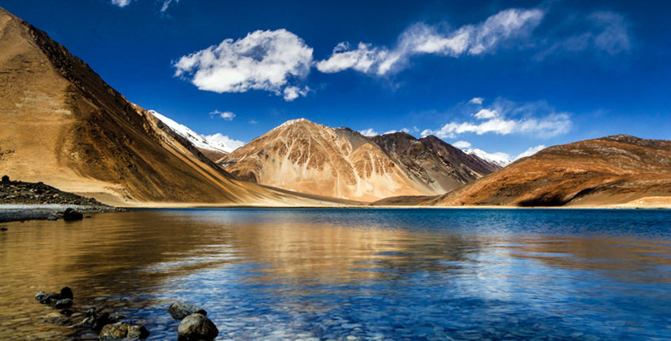

Best Places To Visit In
THE WORLD
1. Switzerland

Switzerland is a mountainous Central European country, home to numerous lakes, villages and the high peaks of the Alps. Its cities contain medieval quarters, with landmarks like capital Bern’s Zytglogge clock tower and Lucerne’s wooden chapel bridge. The country is also known for its ski resorts and hiking trails. Banking and finance are key industries, and Swiss watches and chocolate are world renowned.
2. London

London, the capital of England and the United Kingdom, is a 21st-century city with history stretching back to Roman times. At its centre stand the imposing Houses of Parliament, the iconic ‘Big Ben’ clock tower and Westminster Abbey, site of British monarch coronations. Across the Thames River, the London Eye observation wheel provides panoramic views of the South Bank cultural complex, and the entire city.
3. Las Vegas

Las Vegas (Spanish for "The Meadows"), officially the City of Las Vegas and often known simply as Vegas, is the 28th-most populated city in the United States, the most populated city in the state of Nevada, and the county seat of Clark County. The city anchors the Las Vegas Valley metropolitan area and is the largest city within the greater Mojave Desert.Las Vegas is an internationally renowned major resort city, known primarily for its gambling, shopping, fine dining, entertainment, and nightlife. The Las Vegas Valley as a whole serves as the leading financial, commercial, and cultural center for Nevada.
4. Leh Ladakh

Leh, a high-desert city in the Himalayas, is the capital of the Leh region in northern India’s Jammu and Kashmir state. Originally a stop for trading caravans, Leh is now known for its Buddhist sites and nearby trekking areas. Massive 17th-century Leh Palace, modeled on the Dalai Lama’s former home (Tibet’s Potala Palace), overlooks the old town’s bazaar and mazelike lanes.
5. Paris

Paris, France's capital, is a major European city and a global center for art, fashion, gastronomy and culture. Its 19th-century cityscape is crisscrossed by wide boulevards and the River Seine. Beyond such landmarks as the Eiffel Tower and the 12th-century, Gothic Notre-Dame cathedral, the city is known for its cafe culture and designer boutiques along the Rue du Faubourg Saint-Honoré.